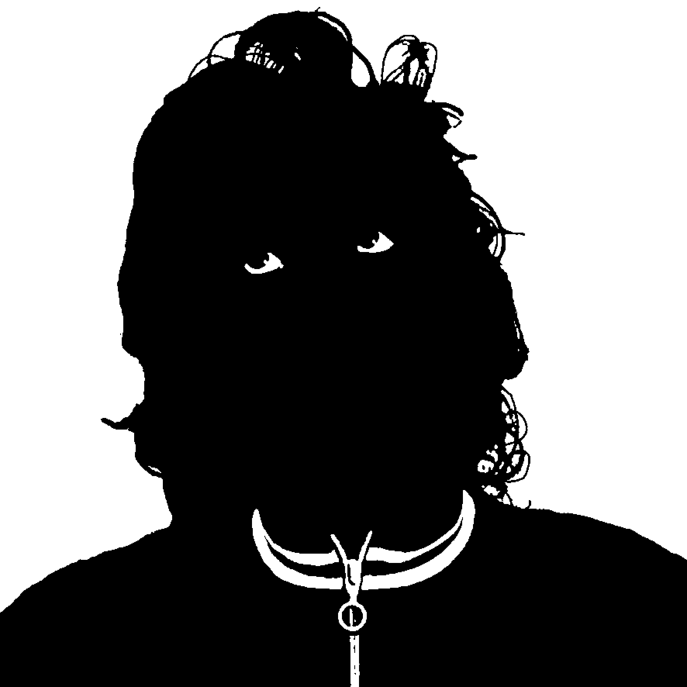

ПРОТОКОЛЫ ПОСЛЕДНЕГО ДОПРОСА
1. краткие био

Алексей Буйнов-Каталкин (наст. имя Алекс Рашкован) - место и год рождения
неизвестны, национальность - молдаванин, прежний род занятий - фарцовщик с
Солянки, в настоящее время - профессиональный катала.
Ильяслав Фалько (Ильяс Фалькаев) - место и год рождения неизвестны, нац. -
чеченец, долгое время был рядовым бойцом преступной группировки,
контролировавшей валютные спекуляции, торговлю золотом, орденами ленина и
проституцию на Юго-Западе столицы.
Борис Донов (он же Ручечник) - род. в 1920 году, нац. -
русский, старейший московский вор-карманник, промышляющий
кражами в театрах, музеях, художественных
галереях и прочих местах культурного досуга.
Распределение ролей:
Буйнов-Каталкин - переговоры и имидж группы.
Фалько - охрана и прикрытие.
Донов - боевая разведка и детерминация.
Смысл этого:
Оперативное реагирование на любую опасную социокультурную ситуацию.
Благодаря четкой структуре и профессиональной подготовке в абхазских
лагерях группе удалось выйти на первое место в жесткой борьбе среди других
преступных групп.
2. Началось все с первого журнала ПГ, задуманного Буйновым-Каталкиным, Фалько
и неким впоследствии бесследно исчезнувшим в череде разборок
Гринбергом-Смирновым-Рыбцом (ни настоящее имя, ни какие-либо
биографические данные неизвестны) якобы как журнал массовой культуры. Но грянул
психоделический кризис, промыл мозги и журнал получился, таким как
получился. Его девизом были слова "Герои нашего времени - это фрики, давно
нырнувшие в пучину собственного галлюциноза". Его основой стали 4П -
патриотизм, простота, правда и пиздюли. Сейчас журнал (аббревиатура -
"жирные урки режут ножами аналы лохам") организован по принципам жесткой
воровской этики, не вполне понятным постороннему взгляду. Это русский
патриотический аль-манах. Это журнал не о ком-то и не о чем-то, а журик
самих пацанов, т.е. всех известных нам отечественных воров в законе и
просто уважаемых блатарей, нигде не работающих, не имеющих семей,
скрывающихся под масками альтернативных деятелей, не вписанных ни в какие
структуры. Эдаких якобы самостоятельно мыслящих волков-одиночек - сидящих
по хавирам "подпольных" музыкантов, литераторов, художников, дизайнеров,
врачей, ювелиров и т.д.
Журнал увидел свет в начале 1999 года. Затем с целью отвлечения внимания от
него и сокрытия имен, явок и адресов была раскручена цепь презентаций и
акций - под их видом переезжади с места на место, ловко меняя разные
мазовые майданы и хазы. Состоялись так называемые "концерты" в клубах "ОГИ"
и "Территория", "чтения" в библиоцетре "Панглосс", "выставка" в галерее
"Спайдер&Маус" и акция "No Dj's" в клубе "Край", когда пеклись и
раздавались всем присутствовавшим подозрительные блины с дырочкой
посередине и сомнительной начинкой. После чего были гастроли в Питер, где
лежбищем служил клуб "Грибоедов". Так плавно докатились до первого
фестиваля позитивных вибраций "Пуш Пуш КинГ" в Нескучном саду, который
состоялся в июне 1999 года. А уже в сентябре прошел второй международный
"Пуш Пуш КинГ", на который съехались авторитетные урки со всего света,
приехал даже даб-король лондонского преступного мира Mad Professor.
Параллельно в сентябре была открыта неплохая малина, известная под именем
культурное место "ПушкинГ", впоследствии переименованная в книжный сал.
"ПушкинГ". Там-то пэгэшники довольно долго загорали в полном оттяге.
Попутно выпускалась для видимости всяческая козырная продукция - появились
пг-открытки, брошюрки, наклейки и раритетная воровская книжка "Ростан и ПГ,
или Анохин и хулиганы". Однако довольно быстро хаза была вычислена
фээсбэшниками и накрыта отрядом по борьбе с наркотиками. Державшийся в
отдалении дружественный авторитет Червяк (он же Жук - место и год рождения
неизвестны, нац. - украинец, в прошлом - боец юго-восточной группировки,
занимавшейся систематическими поборами с пивных ларьков в Текстильщиках,
местонахождение в настоящее время неизвестно) залег на дно и то ли исчез из
поля зрения, то ли как всегда был вычислен и препровожден в места не столь
отдаленные, а Буйнов-Каталкин и Фалько скрылись в сибирских лесах, проявившись
затем в жюри фестиваля живой музыки "Устуу Хурээ" в Туве. Жюри это было ни
чем иным как крупной воровской сходкой, созванной местным законником певцом
Кангар-оолом.
К концу 2000 года был практически готов новый Журнал, т.е. аль-манах ПГ. В
целях конспирации и опять-таки для отвода глаз была задумана и выпущена
кассета "Противотанковой Гранаты". Ненадолго на связи появился Червяк.
Затем были презентации аль-манаха в Москве в "Летчике" и "ОГИ". После чего
Фалько, пользуясь своими обширными воровскими связями, единолично
презентовал журнал в Питере у неоакадемистов и тамошнего вора в законе
Тимура Петровича Новикова и в Екатеринбурге на "чтениях" у местного
авторитета Курицына.
На сегодня Буйнов-Каталкин и Фалько продолжают свою деятельность в рядах
преступной группировки. Арестованный сразу же при появлении на последней
московской презентации Червяк на этот раз был отконвоирован в места очень
отдаленные. Его место после прописки готовился занять молодой вор-художник
по кличке Нинок, однако он проиграл в острой и кровавой борьбе со старейшим
московским вором Ручечником, лидером беспредельной группировки "XYZ", который
буквально устроил череду жесточайших бандитских разборок ради объединения ранее
раздробленных воровских кланов в новый мощный синдикат.
3. кого уважаем в современной культуре?
В музыке - весь блатняк, то есть русский шансон и черный рэп, разумеется, ну и
тувинское тюремное пение, кавказский ресторанный романс... Поэзию любим воровскую -
рэп- и раггамаффин-лирику, а вообще в литературе и кино - все боевики и порно, в
искусстве ничего не уважаем, так как не знаем, что это такое.
Москва, подвалы Лубянки, 2002 г.
|